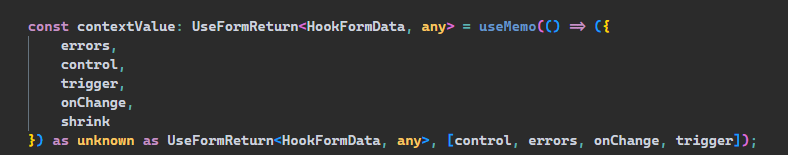
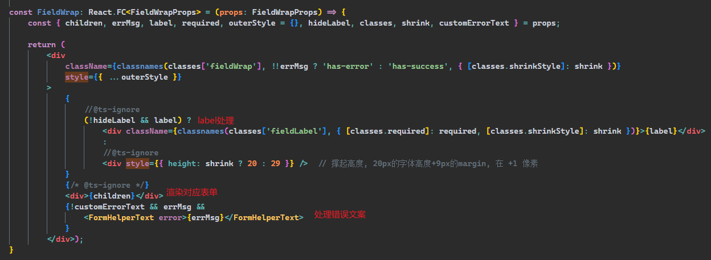
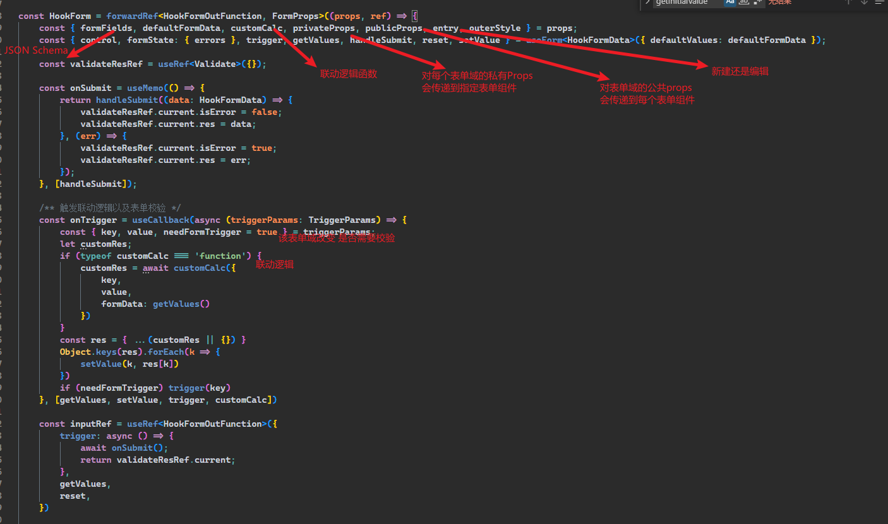
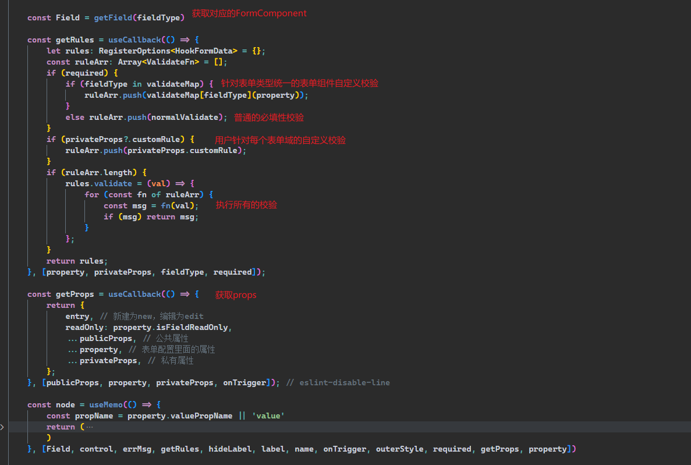
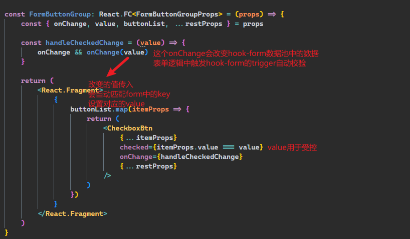
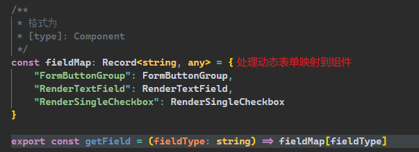
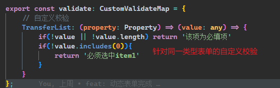
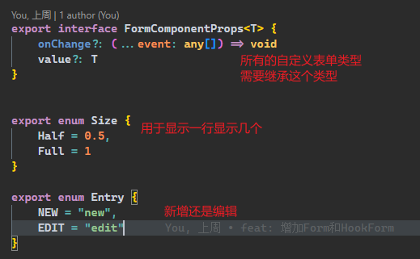
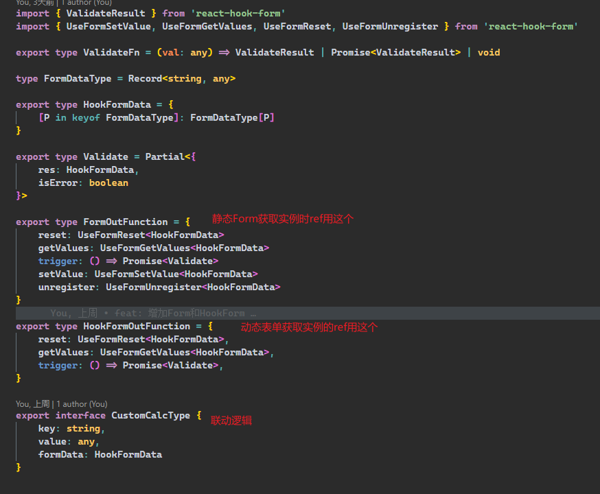

选择的原因
公司本身使用reduxForm处理表单，也讨论过使用antd的表单，思考许久有以下问题:
reduxForm
不排除我对reduxForm理解不够深
reduxForm已经停止维护，表单过重，打包体积过大(24kb)，react-hook-form8kreduxForm处理联动逻辑比较麻烦，没有一个可靠的form实例reduxForm联动改变数值不触发校验，手动触发校验方式比较hack(针对每个Form组件拿到实例手动触发onBlur校验)，其次校验render时机不正确，导致错误文案没法展示，项目中使用setTimeout解决reduxForm文档比较难读，对Typescript支持不友好reduxForm是采用高阶组件，对逻辑复杂的表单的onChange会有性能问题(卡顿，输不了值)，目前已经有FormComponent出现此问题
antd
antd封装了一个完整的解决方案，底层使用rc-field-form，假如我们在rc-field-form到Form这个过程需要自定义业务，难以实现，并且有很多不需要的功能antd的表单再去封装动态表单难以实现，例如基于antd的Form去封装一个ant-design-pro的ProForm成本会激增antd的功能如果没有你想要的，无法去表单内部实现，只能通过其他方式，例如:reduxForm会对表单组件传递dirty判断数据是否被修改、valid判断校验是否通过(不触发render的情况下)antd是属于另一个ui库，与我们初始的ui选型不一致，无法单独引入Form，antd的样式采用module css的方式，与material-ui的css in js的方式相违背，未来在主题上会出现很多问题
实现的目标
静态表单
表单数据都是以组件形式自己编写
1 | <Form> |
目标:
借鉴antd，保留原项目reduxForm中好的东西，剔除antd不需要的功能，每一步流程都可以根据业务自定义
对项目的Form表单实现统一校验、统一联动校验、统一/自定义样式布局、类似于antd中常用的基础功能
保留一定的可扩展性未来支持骨架屏，处理异步逻辑等等
动态表单
表单数据以JSON schema的格式配置，统一渲染
1 | const formField = [ |
动态表单解决的问题:
FormComponent过多且布局较为统一表单数据以
JSON Schema的形式存储在后端
目标:
功能上支持自定义校验、自定义组件配置、联动逻辑、表单动态的props传递
静态表单实现方式
流程

Form
- 处理用户对表单的全局监听，以及
hook-form中提供的内置方法

- 处理
contextValue，需要传递给Form.Item的全部放在contextValue下

- 根据用户传递的
ref，创建实例，抛出实例方法

Form.Item
- 渲染
FormComponent时对每一个FormComponent增加默认样式(FieldWrap)

针对没有提供
name的FormComponent只渲染样式，数据不受hook-form控制为用户提供单个
FormComponent的监听(直接在Form.Item上传递onChange)处理表单校验(默认校验、自定义校验)，提供自定义校验会覆盖默认校验

- 讲
hook-form保存的value传递到表单组件用于受控，将改变hook-form``FormComponent的onChange传递到对应表单(即受控组件常用的value和onChange)
动态表单实现方式
流程

HookForm
onTrigger作为回调传递给FieldRender的onChange, 针对表单的每个onChange会判断是否满足联动逻辑
FieldRender
处理每个表单的统一校验，针对单个
FormComponent的用户自定义校验获取
FormComponent的props, 包括了JSON schema中property属性下的、开发者privateProps以及全局的publicProps

动态表单validate.ts
校验相关

自定义表单组件
编写方式
统一规定受控组件, 使用TypeScript编写
onChange是hook-form的onChange, 用于改变表单的值value是hook-form数据池中的数据

FieldMap

validate.ts

TypeScript支持
- 对应自定义的
FormComponent的类型

- 对应
Form实例Type

不足与改进
由于二级表单形式五花八门，不支持二级表单，目前也没想好怎么支持
默认的表单数据的类型应该作为泛型传入，而不是内置
HookFormData传入，这样导致submit返回的类型与外部定义的类型不兼容，需要类型断言。写完后才发现，看了antd的Form也是那么做的，但是改动量过大假如
Button的按钮提交根据是否校验通过和是否修改过默认表单数据来判断是否disable，目前只能render在<Form></Form>组件的最后，不能自定义渲染位置。reduxForm是采用高阶组件的模式，会渲染全表单，与hook-form设计思想违背，hook-form将每个FormComponent与自身数据池隔离提升性能。目前也没有想到最优解defaultFormData可能是异步的，目前必须在无数据的时候不渲染Form，不然默认值设置不上去， 如下：1
2// 假如 asyncDefaultFormData 是异步获取的
!asyncDefaultFormData ? null : <Form defaultFormData={asyncDefaultFormData} />